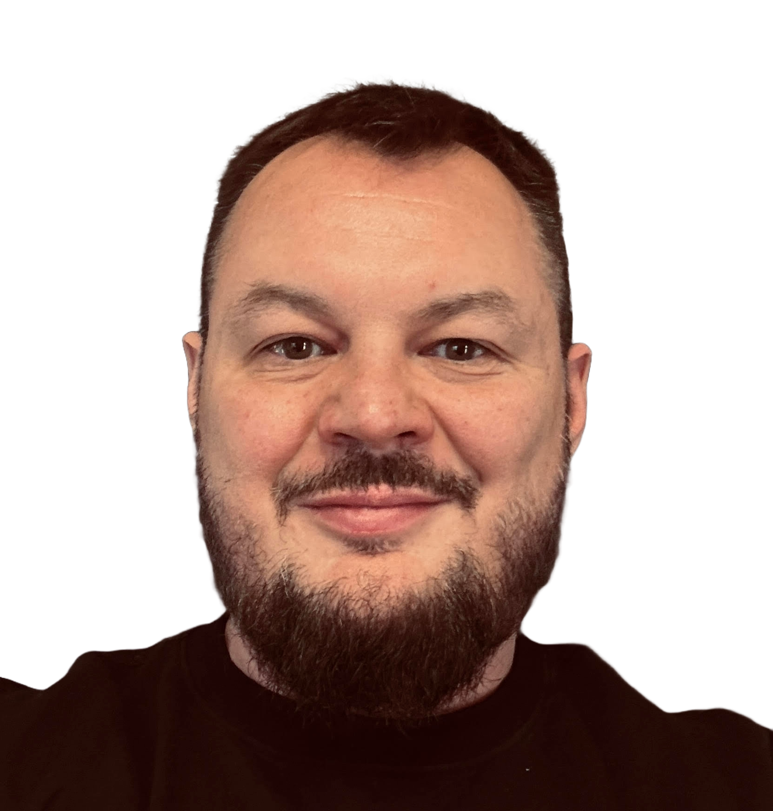

Data Quality & Test Automation
Senior QA & Data Quality Engineer
10 lat doświadczenia w branży VOD/OTT. Łączę inżynierię testów (Postman, UX/UI) z analizą danych, zapewniając najwyższą jakość reklam i treści wideo.

W TVN Warner Bros. Discovery odpowiadam za kompleksową jakość ekosystemu reklamowego w serwisach Player, TVN24 i Max.
Moja rola to most między technologią a doświadczeniem widza. Z jednej strony automatyzuję testy API (Postman) i weryfikuję kluczową logikę AdPod (mechanizm podmiany reklam), a z drugiej dbam o nieskazitelny UX/UI aplikacji. Całość domykam weryfikacją danych – sprawdzam logi i oskryptowanie telemetryczne, upewniając się, że analityka precyzyjnie odzwierciedla zachowania użytkowników.
Nadzór nad poprawnością implementacji Dynamic Ad Insertion.
Automatyczna weryfikacja strumieni danych reklamowych i integracji z platformami partnerów (WP, Canal+, Play). Analiza zgodności metadanych wideo ze standardami rynkowymi.
Kompleksowe testy reklamowe i weryfikacja migracji danych przy wdrożeniu globalnej platformy MAX na polski rynek.
Kompleksowe testy (Web, Mobile, SmartTV) oraz nadzór nad spójnością danych podczas migracji serwisu do chmury AWS. Implementacja i weryfikacja DAI w serwisach streamingowych grupy TVN.
Wdrożenie, utrzymanie i rozwój serwisu informacyjnego wideo.
Testowanie systemów CRM, Legacy oraz współpraca przy systemie Wyrocznia 2.0.